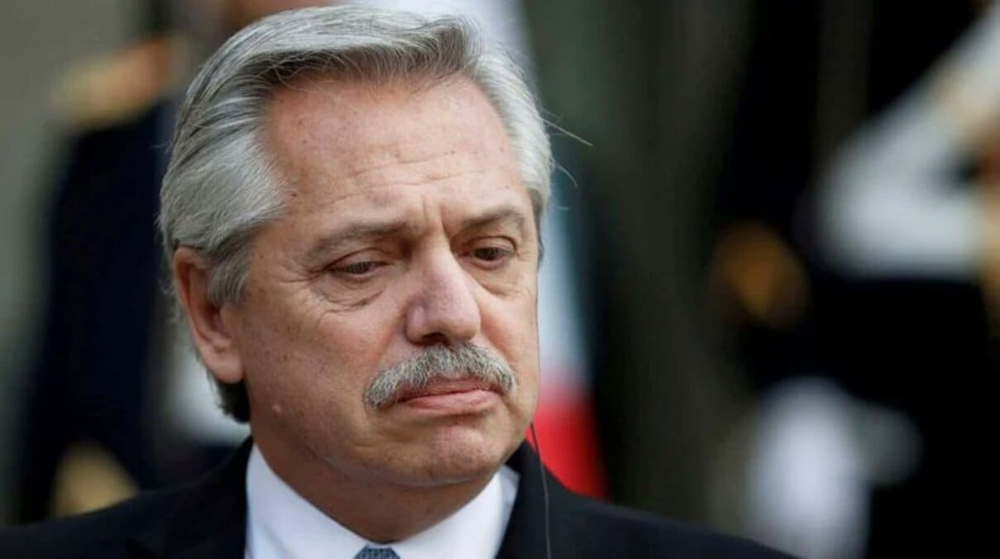

AUMENTAN LAS TENSIONES ENTRE ARGENTINA Y CHILE
El conflicto entre Javier Milei y Gabriel Boric tiene sus raíces en profundas diferencias ideológicas que quedaron en evidencia durante eventos recientes como la cumbre del G20. Milei, defensor del neoliberalismo, argumentó que el mercado y la iniciativa privada son las únicas vías para generar progreso y criticó el papel del Estado en la lucha contra las desigualdades. Por su parte, Boric refutó estas ideas destacando que el neoliberalismo ha generado pobreza y defendió el rol del Estado en la construcción de sociedades más justas.
Además, en el aniversario del Tratado de Paz y Amistad entre Argentina y Chile, ningún funcionario argentino asistió, lo que algunos interpretaron como un gesto de desdén en medio de las tensiones. En términos multilaterales, Milei también ha tomado posturas contrarias al consenso regional en temas como igualdad de género y transición energética, lo que ha generado roces no solo con Chile, sino con otros países de la región.
Estas diferencias han fortalecido una narrativa de desacuerdo entre ambos mandatarios, reflejo de los contrastes ideológicos entre sus respectivos gobiernos.
→ PARA MÁS INFORMACIÓN HAGA CLIC EN LAS IMÁGENES ←
ALBERTO FERNÁNDEZ DECLARA POR LA CAUSA DE LOS SEGUROS
Recientemente, Alberto Fernández estuvo involucrado en una causa relacionada con el manejo de contratos de seguros durante su presidencia. La acusación se centra en la firma de un decreto en 2021, que cambió el sistema de coaseguro, otorgando el monopolio a Nación Seguros S.A. Según la investigación, algunos funcionarios públicos habrían utilizado su posición para beneficiar a empresas privadas de seguros, mediante la intermediación irregular de particulares, lo que implicaría actos de corrupción.
Además, se descubrió que algunos de estos intermediarios no desempeñaban roles legítimos, pero recibían comisiones elevadas por su participación en estos contratos. En el contexto de este caso, Fernández negó su implicación en actos corruptos, aunque la causa está en marcha y afecta también a varios allegados a su círculo cercano, incluidos amigos y excolaboradores.
Las investigaciones continúan, y la situación ha generado controversia, especialmente por la cercanía de Fernández con algunos de los involucrados.